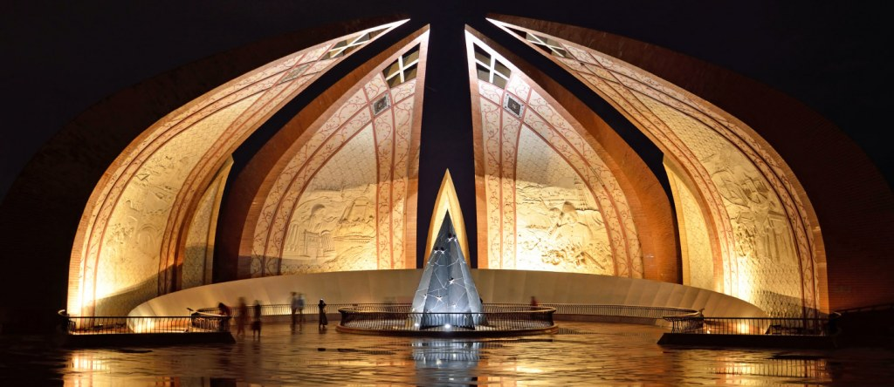

<div class="portfolio-single-load clearfix">
    <div class="custom-full-width-box">
        <div class="custom-container">
            <div class="custom-row align-items-center">
                <div class="custom-image-column">
                    
                </div>
                <div class="custom-text-column">
                    <h2 class="custom-heading">Pakistan Monument</h2>
                    <p class="custom-paragraph">
                        Behold the architectural masterpiece of the Pakistan Monument, inaugurated in 2007 to commemorate the country's independence. Designed by renowned architect Arif Masood, the monument symbolizes national unity and solidarity, with its four towering petals representing the provinces of Pakistan and the territories of Azad Kashmir and Gilgit-Baltistan. Explore the adjacent Pakistan Monument Museum, which chronicles the nation's history, culture, and struggle for independence through multimedia exhibits and interactive displays.

                    </p>
                </div>
            </div>
        </div>
    </div><!-- .custom-full-width-box end -->

</div><!-- end single-project -->
